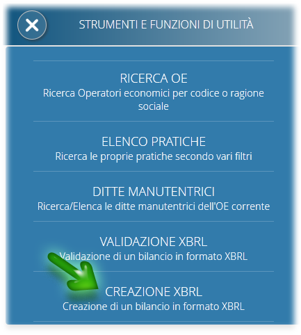

XBRL - Repubblica di San Marino
Il sito ufficiale della Repubblica di San Marino per l'XBRL

Dal 2019 ogni società deve depositare il bilancio in formato XBRL.
È a carico delle società compilare il bilancio secondo i canoni tecnici e i principi contabili stabiliti nella tassonomia sammarinese
e fornire il file .xbrl .
Il deposito è effettuato completamente online, sul portale della pubblica amministrazione www.pa.sm, tramite un'apposita pratica dell'applicazione OPEC.
Se l'azienda NON dispone di un software di contabilità che genera automaticamente il bilancio nel formato xbrl, è disponibile un servizio gratuito di generazione
XBRL.

Accedendo al portale www.pa.sm, servizio OPEC, alla voce Strumenti è disponibile un set di funzioni tra cui la funzione Creazione XBRL.
Attraverso la creazione XBRL è possibile inserire i dati di bilancio per la società correntemente in gestione.
Il bilancio viene presentato in due pannelli: a sinistra sono presentate le voci di bilancio in maniera gerarchica, a destra il pannello con i campi per inserire i valori delle voci.
I dati vengono memorizzati in maniera permanente, quindi è possibile inserire le voci in più sessioni di lavoro. Tipicamente, nella fase iniziale, si andrà a riempire il dato con i valori alla chiusura del penultimo esercizio (ove previsto).
Una volta compilato il bilancio, lo si può esportare in formato xbrl in un file che verrà scaricato sul PC dell'utente collegato. Tale file potrà poi essere fornito alla pratica OPEC di deposito del bilancio.
È possibile anche importare un file xbrl nella fnzione di creazione del bilancio. Il file può essere un bilancio anche incompleto, verranno valorizzate le voci specificate. I dati mancanti potranno poi essere compilati direttamente nello strumento interattivo di creazione del bilancio, ed eventualmente esportati in un nuovo file.
Un file xbrl, per poter essere depositato, deve prima essere validato. La validazione fa tutta una serie di controlli sintattico/formali, controlla la presenza di alcune voci sempre obbligatorie e verifica che le voci che sono il risultato di operazioni aritmetiche con altre voci, abbiano un valore corretto.
La pratica OPEC di deposito del bilancio effettua questa validazione prima di permettere il deposito.
È possibile, però, utilizzarla separatamente dalla pratica: sempre nel menu Strumenti di OPEC esiste la voce di menu VALIDAZIONE XBRL che esegue esattamente questo compito.
Si fornisce un file xbrl e la funzione genera un report con gli eventuali errori occorsi.